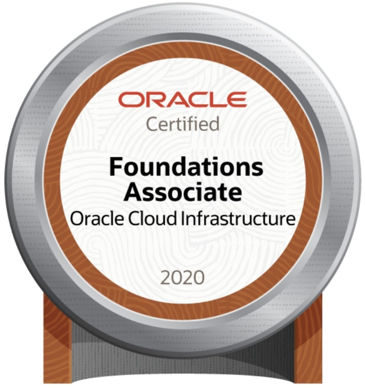
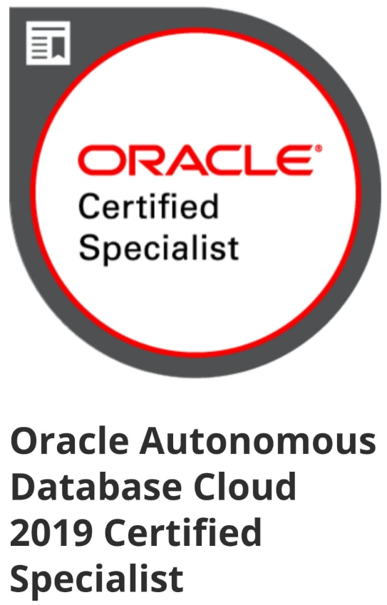
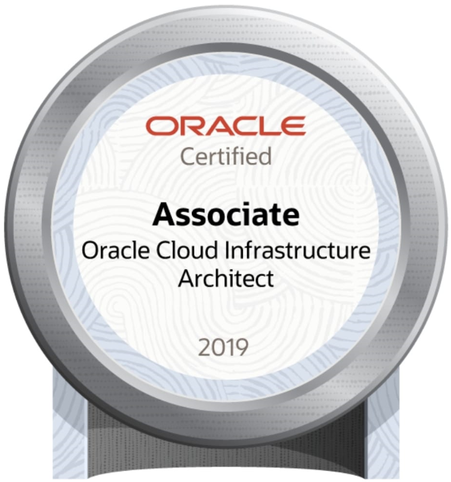

Curriculum Vitae


Tecnólogo en gestión de Redes, formado con principios éticos y valores, capaz de dar Soluciones a todo tipo de problemas planteados y manipulación de la Información aplicando análisis, capacitado para promover y administrar proyectos teleinformáticas, que lleven a las organizaciones la modernización y competitividad. Coordinar el soporte técnico de las Redes de Telecomunicaciones. Tengo sólida formación integral e idoneidad para proveer soluciones integrales relacionadas con el diseño, instalación y mantenimiento de sistemas relacionados con las Redes de Telecomunicaciones que garanticen su competitividad en el mundo laboral. Con criterio y responsabilidad social, con respecto al impacto social, ecológico, económico, político, y cultural de las tecnologías de la información y la comunicación. Formado para promover el trabajo en equipo y de cumplir con las normas que regulan el campo de las Telecomunicaciones, estoy comprometido con el desarrollo local, regional y nacional de mi ejercicio profesional.
- Educación
-
Institución Educativa el Salado
Título: Bachiller técnico
Año: 2010
-
Institución Universitaria de Envigado
Título: Tecnólogo en Gestión de Redes
Año: 2015
-
Institución Universitaria de Envigado
Estudios: 4 Niveles de Inglés aprobados
Año: 2016
-
Institución Universitaria de Envigado
Estudios: Actualmente cursando el 8vo semestre de Ingeniería de Sistemas
Año: N/A
- Otros estudios
-
Oracle Certification Program
Título: 1Z0-1085-20 Oracle Cloud Infrastructure Foundations 2020 Associate
Año: 2020

-
Oracle Certification Program
Título: 1Z0-931 Oracle Autonomous Database Cloud 2019 Specialist
Año: 2020

-
Oracle Certification Program
Título: 1Z0-1072 Oracle Cloud Infrastructure 2019 Architect Associate
Año: 2020

-
SENA
Estudios: Inglés virtual
Año: 2010
-
Institución Universitaria de Envigado
Estudios: Taller Pruebas de Software
Año: 2011
-
Institución Universitaria de Envigado
Estudios: Etiqueta y Protocolo
Año: 2012
-
POLITÉCNICO PROSANEAR
Estudios: Curso B.P.M. en manipulación de alimentos.
Año: 2013
- Skills
-
Office skills
- Desarrollo e implementación de métodos y políticas de respaldo y Recuperación, creación de manuales y procedimientos para restauraciones planificadas.
- Manejo básico de herramienta SIMPANA
- Administración, creación y mantenimiento de Bases de Datos Oracle, SQL Server, MariaDB y MySQL.
- Habilidades y Conocimientos en manejo de S.O. Windows, AIX, Open Suse y Red Hat.
- Instalación de base de Datos Oracle, MySQL, MariaDB y SQL Server.
- Manejo y Configuración de Herramientas Oracle tales como, SQL*PLUS, TOAD.
- Actualización de Versiones Oracle y MySQL.
- Manejo de informes, estadísticas, bitácoras y documentación de procesos para el área de base de datos.
- Conocimiento de lenguaje SQL.
- Configuraciones e instalaciones de productos Oracle 10G, 11G, 12C, SQL Server, MariaDB y MySQL.
- Configuración de ambientes de réplica MySQL, módelo master-slave y master-master.
- Utilización de utilitarios Import, Export, Tkprof, SVRMGR, Database Enterprise, entre otros.
- Monitoreo y solución de paradas en el sistema.
- Monitoreo del status de los sistemas de bases de datos.
- Manejo de Oracle Enterprise Manager 10G
- Manejo de Oracle Enterprise Grid Control 11G
- Manejo de Oracle Enterprise Cloud Control 12C
- Manejo de SQL*PLUS
- Manejo de Toad for Oracle
- Manejo de Toad for MySQL
- Manejo de HEIDISQL
- Manejo de SQL Server Management Studio
- Manejo de SQLyog Community
- Aplicación de Patches para las Bases de Dato Oracle.
- Migración de BD’s Oracle y MySQL.
- Desarrollo de programas shell activadores de procesos en batch, procesos diurnos y nocturnos, respaldos.
- Desarrollo de programas shell utilitarios para diversas tareas tales como: cancelación de procesos de usuario, búsqueda de archivos en el servidor de acuerdo a diferentes características, entre otros.
- Implementación de scripts de cambios masivos para BD’s Oracle, SQL Server, MariaDB y MySQL.
- Conocimientos en manejo de Editor Vi.
- Conocimientos de la arquitectura de Oracle Cloud Infraestructure y manejo de la consola de OCI.
-
Soft skills
- Comunicación efectiva
- Respeto
- Trabajo en equipo
- Experiencia laboral
-
Cadena S.A. Practicante TI infraestructura , La Estrella - 6 meses
Jefe inmediato: Ángela Noreña
Telefono: xxxxxxxxxx- Organización, manejo y control de bodegas.
- Gestión de software tarificador para el control del consumo de llamadas.
- Gestión del software Kyocera Net Viewer para el control de impresiones.
- Instalación de software base a equipos. Soporte Técnico.
-
SETI S.A.S. DBA, Medellín - 2014-2019
Jefe inmediato: Wilson Fernando Sierra Zapata
Telefono: xxxxxxxxxx- Atención al cliente.
- Revisión del estado de las bases de datos.
- Mantenimiento de las bases de datos.
- Planes de mejora (Optimización) en las bases de datos.
- Generación de informes.
- Atención de incidentes en bases de datos.
- Gestión de procesos.
- Gestión de documentación.
- Análisis de capacidades.
- Análisis de riesgos.
- Monitoreo de alarmas y eventos.
- Configuración de ambientes de monitoreo.
- Creación de bases de datos.
- Diseños de HA.
- Hobbies
-
- Videojuegos
- Redes sociales
- Jugar fútbol
- Cine
- Referencias laborales
-
Nombre: Yibrin Noe Dominguez Aponte
Empresa: SETI S.A.S.
Cargo: Consultor de bases de datos
Teléfono: xxxxxxxxxx
-
Nombre: Jhon Jairo Restrepo Muñoz
Empresa: UNIROCA
Cargo: Coordinador de bordados
Teléfono: xxxxxxxxxx
- Referencias personales
-
Nombre: Miriam del Carmen Restrepo Muñoz
Ocupación: Gerente Administrativa y Financiera
Empresa: SETI
Teléfono: xxxxxxxxxx
-
Nombre : Daniel Darío Restrepo Muñoz
Ocupación: Coordinador Nacional de pedidos y despachos
Empresa: Industrias médicas San pedro S.A.S
Teléfono: xxxxxxxxxx
-
Nombre: Wilder David Cruz Ceballos
Empresa: IBM Colombia
Cargo: Especialista de bases de datos
Teléfono: xxxxxxxxxx